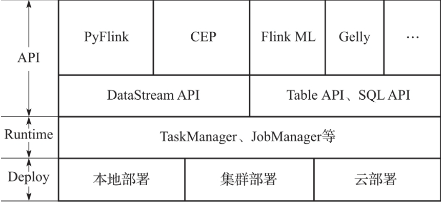
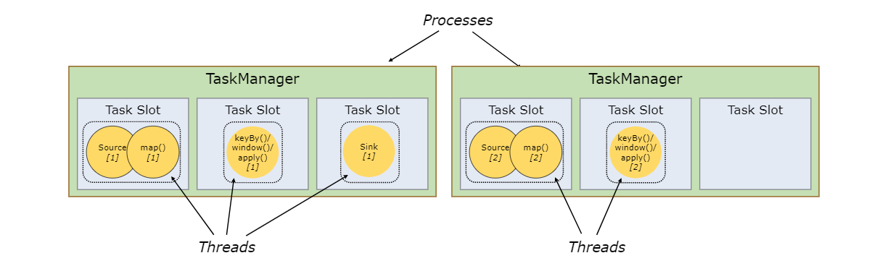
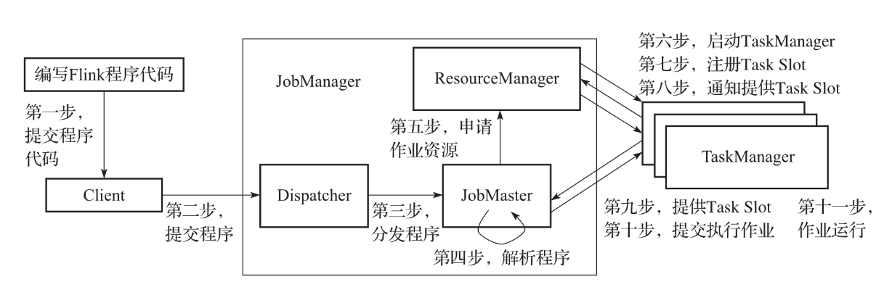
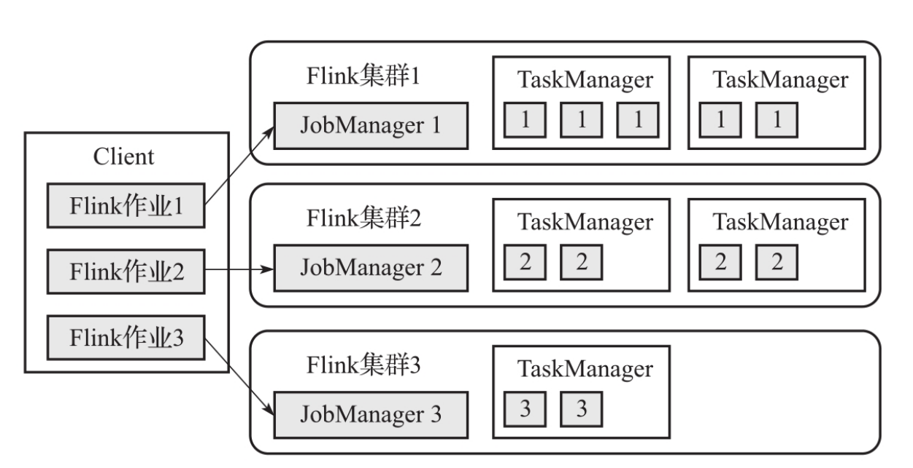
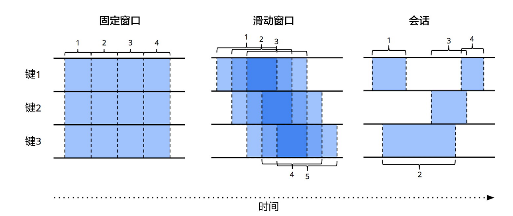
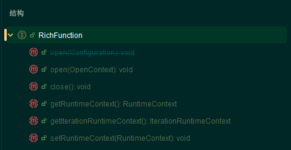
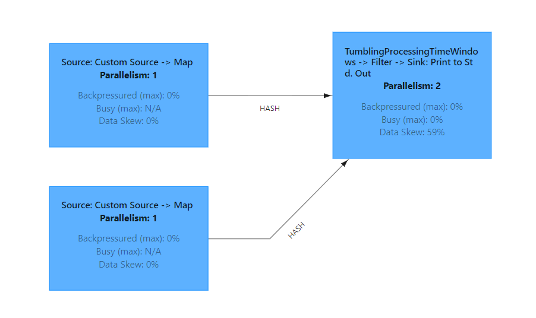
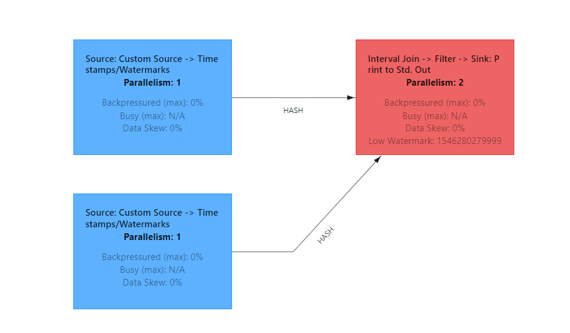

Flink总结¶
Apache Flink Documentation | Apache Flink
必须声明一点，Flink是移动数据而不是移动计算，Flink和Spark模型有本质的不同。Spark之所以说是移动计算，是因为在批处理任务执行的时候将task发到尽可能同数据近的节点，这是批处理的操作，一个stage结束才开始下一个stage，所以有机会根据输出/存储的数据位置控制task的发送位置。但是Flink的流处理是直接开启整个计算图，然后等待数据流入，所以Flink本质是移动数据。当然，这里特指其流处理模式。其实Flink也可以跑批，这时候它就会控制计算任务是一个个启动而不是全部启动，类似Spark的方式。
Flink Core¶
Flink架构¶
Flink架构一共分为三层，分别是Deploy,Runtime,以及API层，如下图所示:

Flink Runtime¶
核心组件
Flink是一个标准的主从分布式引擎，其Runtime架构，核心组件包括: Client,JobManager,TaskManager.
首先是Client,其只是负责准备数据流，然后将其发送给JobManager。
然后是JobManager，其包括三大核心组件:
ResourceManager：负责集群中资源管理和分配，比如task-slots。Flink针对不同的资源提供者，比如YARN,K8s都特化了不同的ResuorceManager。Dispatcher，可以为提交上来的每一个Job启动一个JobMaster,同时运行着Flink web-ui。JobMaster：负责单个JobGraph的执行。
最后是TaskManager，其也称为worker，用于执行作业流的task，并缓存和交换数据流。其上资源调度的最小单位是task-slot，一个slot可以执行一个task，当然，这个task可能有多个算子(算子链的情况)。
针对TaskManager这点，这里着重说明一下。
一个TasnManger是一个JVM进程，而一个TaskSlot是一个执行线程。这里和普通线程池不同就是其会将该进程的内存资源对每个slot进行平均，但是CPU资源并不会平均分配，依旧是一个进程内CPU共享。
一个进程内的tasks好处显而易见，它们共享TCP连接，文件缓存等资源，减少了开销。

Flink中的算子链，其实就是Spark中对应的一个stage中的task，利用并行计算将效率最大化。具体来说，一个chain task可以被投放到一个backend的线程池的一个线程执行-即task-slot，因为操作系统的最小执行单位是线程，所以该集群的最小执行单位、资源分配单位就是slot。
Flink允许一个job内的所有tasks共享slot。
集群所需的task slot == Job中的最大并行度
作业提交流程
其作业的提交流程包括11步，如下:

精确到每一步:
- 编写Flink代码，将作业进行submit,首先到 Client。
- Client会将
Job进行切分，转换为JobGraph（app模式在JobManager执行这步），将其提交到集群中的Dispatcher。 - 集群中的
Dispathcer启动一个JobMaster，后者将任务逻辑进行解析，解析为ExecutionGraph，其是在物理层面具有并行度的执行图，也就是说其可以被分发到多个节点进行并行计算。同时会运行Flink-webui。 JobMaster向ResuorceManager申请所需要的计算节点资源，ResourceManager随后向资源提供框架，比如YARN申请对应资源。- 随后在集群中开启
TaskManager进程，然后将资源划分，向RM注册task-slot。 - 随后告诉
JobMaster其可用的slot资源，随后可以在其上执行作业。（通过rpc）发到对应节点即可。
2种部署模式¶
Pre-job模式已经废弃，所以不总结
Session模式
提前准备一个Flink集群，并全局复用。用户的Client只管提交作业即可，其余的JobManager,taskManager均复用一个集群的。
注意这里的Job解析为
JobGraph同样是在Client端进行
特点如下:
- 集群和作业声明周期不同
- 不用作业资源不隔离
- 作业部署速度快，这是主要目的，比如即席查询场景
Application模式
这里的Job解析为JobGraph就在JobManager端执行，通过它来解析并下载依赖，使得Client十分轻量级。

特点如下:
- 集群和作业生命周期相同。
- 不同Job之间资源完全隔离，每个都是起一个小集群，(这是主要特点，完全隔离)
- 部署速度慢
- 资源抢占
DataStream API¶
Flink一共有四种API
- code
- 有状态流
- DataStream
- 关系型
- Table API
- SQL API
从官网例子迭代¶
官网的例子是逐步推进的欺诈检测例子，相比常见的wordcount，它更有代表性。
整体的思路，就是基于先验知识，进行异常点检测，发现异动点。
主程序
首先来看主程:
| Java | |
|---|---|
1 2 3 4 5 6 7 8 9 10 11 12 13 14 15 16 17 18 | |
首先就是创建一个env，创建Flink运行环境。如果要有web-ui，则需要配置rest-port。
然后是添加数据流，这里使用Flink内置的mock数据源，其有三个字段:
- accountId
- timestamp
- amount
然后对数据流进行转换操作，首先进行keyby，其创建一个keyedStream，后续的函数会分别作用于每个流之上。其实就是要进行一次exchange，保证后续的每个并行task流入的数据是同一个key。同时，keyBy操作可以保证用户追踪流的状态上下文等细粒度控制。
然后就是对每个流(key相同)进行业务逻辑的处理，就是这里传入的自定义处理逻辑，随后再看。
最后将每个流输出的结果添加到自定义sink中。
计算图从一开始就全部启动，等待数据流入，这点和Spark批处理很不相同。
第一版业务逻辑
| Java | |
|---|---|
1 2 3 4 5 6 7 8 9 10 11 12 13 14 15 16 17 18 19 20 21 22 23 24 25 26 27 28 29 30 | |
这是一个作用于keyedStream上的函数，所以可以维护state。这里使用一个ValueState来记录上一个的金额是否满足了条件。
所以它不断匹配第一个满足条件的小金额，然后在之后将状态机转换，开始匹配下一个大金额。
看出来其用CEP写应该会很简单，后续会专门使用CEP写一次。
上述逻辑已经比较完备，唯一缺点就是没有时效性保证。也就是说，一旦匹配到第一个小金额，状态机就不会回退，会一直等到下一个大金额，哪怕时间间隔是一年。所以会有下述的第二版。
第二版-引入时间
依旧是因为keyedStream，所以可以有定义逻辑的操作，也就是在特殊时间触发回调函数。显然，该业务逻辑的定时回调函数应该是清空之前匹配的小数据，从头开始，因为过期了。
| Java | |
|---|---|
1 2 3 4 5 6 7 8 9 10 11 12 13 14 15 16 17 18 19 20 21 22 23 24 25 26 27 28 29 30 31 32 33 34 35 36 37 38 39 40 41 42 43 44 45 46 47 | |
Source¶
简单数据源
对于已有类型的简单数据源，使用fromData即可.
| Java | |
|---|---|
1 2 3 4 5 | |
自定义数据源
| Java | |
|---|---|
1 2 3 4 5 6 7 8 9 10 11 12 13 14 15 16 17 18 19 20 21 22 23 24 25 26 27 28 29 30 | |
只需要实现各种SourceFunction接口的两个方法，分别是输出数据和流的关闭逻辑也就是run和cancel函数。
Kafka数据源
这里需要额外添加依赖，可以指定主题进行消费。
| Java | |
|---|---|
1 2 3 4 5 6 7 8 9 10 11 12 13 14 15 16 17 18 19 20 21 22 23 24 25 26 27 28 29 30 31 32 33 34 35 36 37 38 39 40 41 | |
Operator-概述¶
数据流转换
- map
- flatmap
- filter
- keyBy，
数组，以及没有重写hashCode方法的POJO类不能作为key - reduce，将局部流数据进行滚动聚合
- window：对键控流对每个流上进行开窗，开窗就是根据某些特征对流数据进行分组(每组数据是一个
iterator)，流转换为WindowedStream - windowAll：对普通流的所有数据进行开窗,流转换为
AllWindowedStream - window apply：对流的每个开窗使用
function，此处需要是[All]WindowFunction - window reduce：对流的每个开窗做
reduce并返回结果 - union：同类型多流合并，只保证单流数据相对位置不变
- connect: 不同类型多流合并
- window join：根据指定的
key和窗口对数据进行join。是type JOIN = (DataStream,DataStream) => DataStream - interval join : 并不和开窗耦合，只是将两个键控流中
某个key相等并且在指定范围内的数据进行Join - ......
物理分区分布
- partitionCustom：自定义分区，可传入分区器
- shuffle：随机分区
- broadcast：将该流元素广播到每个分区
资源隔离
多个算子在特定情况可以进行chain,然后可以在同一个线程中执行（slot）。默认开启算子链模式。
那么如何禁用呢?
只需要后跟一个disableChaining即可，即可将算子链打断。
如何控制算子执行的slot呢?
可以通过slotSharingGroup("name")来将某些算子放入同一个slot中去执行。
从《流式系统》看算子¶
结合《流式系统》书籍进行总结
数据的处理，通常可以通过what,where,when,how模式进行总结。
- what：计算输出什么结果
- where：以事件时间计，结果在何处被计算
- when：以处理时间计，结果在何时被物化
- how：结果的改进/修正如何相互关联。是丢弃，累积，还是替换?
what
这个问题通过具体使用的开窗函数进行回答，也就是对每个窗口的处理逻辑。
开窗函数有如下几种，控制程度依次增加:
- reduce：输入输出类型一直，从左到右卷。
- aggregate:输入输出类型可以不同，最终基于累加器计算出输出结果，粒度更细。
- process:前两者都是边来边更新，这个函数是到触发时间时拿到数据的
iterator以及上下文，可以进行任意逻辑的计算。
可以看到，其实process是在表达能力和性能之间做了权衡，暴露给用户更强的操控力。
ProcessWindowFunction还可以让用户拿到当前流甚至所有流的当前窗口的state，进行更强的操作。
where
开窗，回答的就是where。
开窗是处理无界流的关键，因为它可以将满足一定特征的数据装入大小有限的桶中，再对每个桶进行处理。这就是上面的概述所说的开窗就是依据某个特征对数据流进行分组。
开窗可以作用于普通流，以及键控流，通常都是使用键控流再开窗，这样的流具有并行处理窗口函数的能力。
窗口的生命周期: 在第一个属于该窗口的元素到达的时候创建，然后在时间超过窗口的截止时间戳 + 用户定义的allowed-lateness之后被完全删除。当然，这里清空(purge)的的是窗口的数据元素，并不是窗口元数据，也就说，窗口也可能会进入新的数据。
| Java | |
|---|---|
1 2 3 4 5 6 7 8 9 | |
如何按照时间边界来划分多条数据流呢?
通常有三种方式:
- 滚动窗口/固定窗口(Tumbing Windows)
- 滑动窗口(Sliding Windows)
- 会话窗口(Session Windows)

在Flink中，可以通过Window Assigners进行指定，也就是指定key被划分到什么位置.
比如还是官网的例子，使用Transcation数据源，数据形式如下:
| Text Only | |
|---|---|
1 2 3 | |
则如果要对其进行固定开窗(滚动开窗),则可以如下方式:
| Java | |
|---|---|
1 2 3 | |
如果是滑动窗口，则是SlidingEventTimeWindows.ofxxx。
会话窗口的话，可以有不同策略，分别是固定间隔，动态间隔等。
when
触发器(trigger)就是用来实现每个窗口的结果，以处理时间计(或者其他标准)，该何时物化输出的。
主要的触发器有两类：
- 完整性触发器:到达某个阈值一次性输出最终结果。语义类似于批处理。
- 重复更新触发器:对每个数据进来，所计算的中间结果，都输出下来，这个最常见。
前者到某个阈值之后直接输出最终结果，而后者会输出每个数据到来之后的结果。
如果你熟悉Scala，则完整性触发器效果就是reduce，而重复更新触发器效果就是scanLeft。
而Flink中，分配窗口的时候会分配默认触发器，这个默认触发器是完整性触发器。分别有ProcessingTime语义和eventTime语义。
如何指定重复更新触发器呢?
Flink中有一个CountTrigger，可以基于数量来触发窗口计算。
Flink中只有使用
event-time的时候才有watermark(其实是启发式水位)，其余部分都是固定的，也就是窗口在结束的时间线统一触发输出。
watermark¶
Flink不同于Spark，它的计算图一旦构成，就会全部启动，所以会有人说Flink是移动数据而不是移动计算，因为它整体来看是数据从固定流图中进行流动。而不是和Spark一样整体上来看是串行启动。
而数据的流动，靠的就是watermark。
作用
关于流式数据处理的when部分，上面已经介绍了是通过trigger来进行触发。
那么trigger到底根据什么可以判定数据流的某个窗口不会再有数据进来了(从而开始触发计算)呢？
答案就是watermark，它给trigger一个断言(assert），让其可以放心进行输出最终结果/关闭窗口。它也是推动无界流处理进度的核心概念。
具体而言，水位告诉trigger，当前系统的数据不会再有比时间T更晚的数据进来。
性质
通常，我们都是利用水位所提供的断言性质，来实现两方面的需求:
- 进行窗口的最终计算/触发计算，以及关闭窗口
- 对数据进行排查，看哪部分数据推进的慢/有问题
分类
根据watermark所提供的断言到底准不准，可以分为完美水位和启发式水位。这是一个权衡的艺术。
而水位到底准不准，主要和一个因素有关，就是timestamp的语义，到底是event-time,injection-time,还是process-time。
injection-time本身又是一个权衡的产物。
因为真实的数据的产生来自外部系统，Flink不可能掌握外部系统的所有信息(由于外部系统本身，网络拥堵等原因)。所以我们得出一个结论，就是一般情况下，使用event-time语义不可能达成完美水位。
如果要完美水位，则有两种方法:
- 使用
injection-time/process-time语义，让Flink掌控全局数据推进。 - 使用静态的，按
event-time排序的数据集。
启发式水位的创建(针对event-time语义)，其效果的差距会很大，因为终究会有迟到的数据。要建立一个好的启发式水位，则有如下方式:
- 使用动态的，按照
event-time排序的动态数据集(方便对数据整体进行估算，来优化启发式水位设置)，说的就是Kafka。
再次强调，Flink的watermark特指启发式水位，针对
event-time语义。
Flink中的内置的基于事件时间的水位生成器策略有两种。
- forMonoTimeStamps：适用于数据源数据按照事件时间有序存储,比如Kafka
- forBoundOutofOrderness：适用于考虑延迟(或者数据源乱序存储)的情况，将数据的水位推进延迟一段时间。
多stage传递
对于不同stage(经过exchange)而言(Stage内部是并行逻辑，可以统一视作一个大算子链)
- 其输入的水位是
上游各数据源Stage的event-time最小值。 - 其输出的水位是以下三者的最小值
- 输入水位
- 状态组件水位
- 输出缓冲区水位
| Java | |
|---|---|
1 2 3 4 5 6 7 8 9 10 11 12 13 14 15 16 17 18 19 20 21 22 23 24 25 26 27 28 29 30 31 32 33 34 35 36 37 38 39 40 41 42 43 44 45 46 47 | |
Sink¶
也就是处理之后的数据都发送/存储到哪里。
- 打印到控制台，则strean.print()
- 发送到
Kafka，则先创建一个SinkFunction，它是一个Kafka生产者，然后stream.addSink即可。 - 自定义Sink,则需要实现
SinkFunction接口的invoke方法。
| Java | |
|---|---|
1 2 3 4 5 6 | |
算子数据传输策略¶
一共有8种数据传输策略。
- Forward: 上游一个subtask只流向下游一个subtask，Flink在能
Forward的情况下都会使用它 - Rebalance：上游的一个subtask数据均匀发送到下游每个subtask，一般用于数据倾斜处理(打散)。也就是说，他一般也是用于多线并行的情况，只不过该变了数据分布而已，计算逻辑照常。它可以处理上下游并行度相同的问题，也可以处理上下游并行度不同的情况(默认就是rebalance)。
- Shuffle：只是和
rebalance的分发逻辑不同，一个是round-robin，一个是random.其余完全一致。 - KeyGroup：使用
keyby之后，上下游传输逻辑就是keyGroup，一般通过Hash来决定发送到下游哪个subtask，一定会保证同一个key的全部在一个subtask中。要注意它和rebalance以及shuffle完全不同，这里要和spark区分开。 - Rescale：将上游
subtask的数据均匀发送给下游的subtask，不过并不是全部的，而是下游局部的subtask。 - Broadcast：上游一个
subtask数据会全部发送给所有的下游subtask。 - Global: 将上游所有
subtask数据汇聚到下游一个subtask中。
RichFunction¶

文档中的定义如下:
An base interface for all rich user-defined functions. This class defines methods for the life cycle of the functions, as well as methods to access the context in which the functions are executed.
也就是说，通过RichFunction，我们可以控制这个函数的整个生命周期的行为。
其中的open/close，是每个subtask初始化、结束时候会执行一次。
而getRuntieContext，就是本subtask的执行上下文。
注意这里为什么是subtask，因为
Flink是流处理，会直接开多并行度的全局计算图。而同一个stage(比如Map[x])中会有多个并行的subtask，这里每个subtask都要初始化一次。
双流Join¶
Flink进行双流Join的算子有两个:
- window join：根据指定的 key 和窗口 join 两个数据流。
- interval join：根据 key 相等并且满足指定的时间范围内（
e1.timestamp + lowerBound <= e2.timestamp <= e1.timestamp + upperBound）的条件将分别属于两个 keyed stream 的元素 e1 和 e2 Join 在一起。
其中,
type window-join = （DataStream,DataStream） => DataStreamtype interval-join = （KeyedStream,KeyedStream） => DataStream
window join
如下例子:
对两个流进行Join，开窗为处理时间的固定窗口，长度为5。它会将两个流中相同窗口内的指定键一直的数据做笛卡尔积(一一处理)，然后输出。
| Java | |
|---|---|
1 2 3 4 5 6 7 8 9 10 11 12 13 14 15 16 17 18 19 20 21 22 23 24 25 26 27 28 29 | |

interval join
这种join和窗口没有关系，或者说它是两边窗口无限大的情况。因为通常某些操作必然有先后顺序，不会划分到同一窗口。
interval join只支持event-time。ok，那么必然要指定watermarkStateagy。并且可以指定窗口左右区间包含不包含。
| Java | |
|---|---|
1 2 3 4 5 6 7 8 9 10 11 12 13 14 15 16 17 18 19 20 21 22 23 24 25 26 27 28 29 30 31 32 33 34 35 36 37 | |

数据乱序¶
数据乱序是导致完美水位无法产生的根本原因。
产生原因
- 数据源本身乱序存储
- 数据源的产生就是乱序，比如用户突然开启飞行模式
- 共享资源限制，比如网络拥塞
可能的解决方案
- 让水位延迟推进: forboundedOutOfOrderness
- 水位正常推进，但是窗口延迟关闭，仍然可以重新触发计算: allowLateness
- 旁路输出
注意几者可以结合提高效率。
注意allLateness在Flink中的实现是重新输出新结果，并不会覆盖旧结果。它会将原有数据存储在subtask本地状态中，等待结合输出新的结果。显然，会导致状态存储过大的问题。
也就是说，同一个窗口可能会送给下游多个结果，需要下游进行取舍/更新结果。
排查思路
- 数据处理前，对数据乱序程度进行排查，看看乱序的限度到底有多大(不断调整延迟让数据丢失最少，就可以看出最大延迟)
- 数据处理时，及时监控乱序程度以及水位推进情况。使用
Flink-metric体系进行监控 - 数据处理后，根据结果及时调整前面设置的参数，保障下一次产出。
状态¶
这里当前基于的版本是
Flink1.20，而Flink2.0的版本引入了存算分离和异步状态API，在后面再分析。
实现思路¶
主要有三点:
- 状态本地持久化
- 精确一次的一致性快照保证异常容错
- 统一API接口
状态本地持久化
Flink的状态数据，存储在subtask的本地机器的内存与磁盘上。
这样可以在对状态进行更新、访问的时候使得延迟达到最低。
但是状态本地化的同时带来问题，如果计算节点宕机，则状态存储会一并丢失-容错很难做。
状态集中管理的关系型数据库的容错管理相比之下就方便一些。
那怎么解决呢？
Flink采用了快照机制，定时将状态快照，统一存储到远端，比如HDFS上。这样节点宕机之后的状态恢复压力减小很多。
精确一次的一致性快照
Flink实现了一个名为checkpoint的分布式轻量级异步快照，保证了精确一次的数据处理，以及一致性状态。其实主要存储的就是state。
通过它实现了处理数据逻辑，和异常容错机制的解耦，用户只需要在使用状态接口的时候开启checkpoint即可。
当有状态算子并行度发生变化怎么办？如何将磁盘中存储的数据重新分配？
Flink将状态进行了分类:
- 算子状态:可以平均分割
- 键值状态：自动根据键值和最大并行度进行分配
当任务中增加、减少了算子，该怎么办？
Flink提出savepoint机制，也就是用户手动触发的checkpoint。
两种状态¶
Flink状态可以分为两类，分别是算子状态，和键值状态。以及一种特化的算子状态-广播状态
算子状态
最常见的场景就是数据源连接
因为状态本地化的原因，Flink中每个subtask只能访问本地的状态数据。所以一个穿透当前subtask的状态就是算子状态。
Flink内置的KafkaConsumer就使用了算子状态，通常情况下，其对每个partition开一个Source[x]，也就是一个subtask,然后在该subtask内维护消费的offset。
所以Flink和Kafka的结合属于外部维护offset，在我的kafka文档中分析过这种情况
具体API:
- ListState
- UnionListState
键值状态
键值状态针对键控流。
因为虽然是进行了keyBy，但是一个subtask并不是只会流一种key(其实Spark也一样，总不能并行度上亿吧)。那么如何给上层用户提供单个key处理的假象呢？
考虑Java并发编程中的theadLocal，它就是一个全局的存储在堆上的Map，维护每个线程对应的副本值。
到了这里类似，在subtask中维护一个Map，给每个key对应的state都存储上。
也就说，这个状态值粒度被缩小到了一个subtask的一种key，所以称为键值状态。
键值状态更常见:
- ValueState
- MapState
- ListState
- ReducingState
- AggregatingState
广播状态
广播状态作用粒度同样是一个subtask.
其通常用在规则日志流中。也就是说，获取最新的一条规则日志流，然后将当前正在处理的流和其进行关联(connect)
然后就可以将当前规则广播到所有处理(process)算子当中。
需要开自定义算子
精确一次性与快照¶
首先是处理系统内部精确一次性，然后是端到端精确一致性。
单机系统
首先看单机系统。
一个单机系统的数据处理，可以分为数据读取，数据处理，状态存储，数据输出。
因为数据读取到内存-数据处理-状态存储 这个过程并不是原子性的，所以必然会有问题。（Kafka的消费问题也是这个原因）
那发生单机故障在恢复的时候，会有什么后果呢？
- 至多一次
- 至少一次
- 精确一次
首先是至多一次. 它只依靠状态持久化。会丢数据，也就是数据读取进来但是没有处理，但是数据源没有任何标记，认为其已经处理完毕。
然后是至少一次，它依靠状态持久化 + 数据源offset。这样可以做到数据重放，起码不会丢数据。但是不能判定数据到底有没有处理过，所以可能会重复，也就是至少一次。
最终是精确一次。它依靠状态-对应offset持久化 。也就是说，把offset的管理和状态管理统一起来。这样每次恢复，都知道当前已经有的状态，以及该从哪里重放。需要注意，这里的持久化需要和数据处理操作，也就是状态修改是互斥的，不能并行执行。
则单机系统的精确一次性实现流程如下:
- 数据源端
- 有重放的数据源，比如Kafka
- 数据处理端
- 有远端持久化存储:如比HDFS。
- 一致性快照由单机应用自身定期触发，同时持久化状态和对应的数据源偏移量，并和状态修改保持互斥。
- 宕机恢复的时候先读取持久化状态，再对数据源从对应偏移量开始进行重放。
如此，可以完美实现单机的精确一次性。
分布式系统
Flink精确一次性的本质，其实是分布式事务。
分布式系统如何实现内部的精确一次性处理呢？
对于分布式系统，比如Flink来说，只需要看逻辑数据流图即可。因为执行层面的每个算子内的subtask只有数据的区别，其他完全一致。
所以整体的分布式保证可以从三部分看：
- 数据源(Source)
- 转换过程
- 数据汇
数据源(Source)，可以直接照搬单机的精确一次性模式。其实数据源放在外部数据系统，比如Kafka来说，就是消费者。当然可以采用上面的例子。
具体来说，Source需要在进行checkpoint的时候直接进行快照，同时持久化offset。等到故障恢复的时候到对应的offset开始进行数据重放。
那么中间的Transform算子可不可以照搬呢？
中间的Transform算子使用chandy-lamport算法,通过marker机制/barrier机制来进行精确一次性。
当然不可以。因为网络信道本质是不可回溯的。
假设现在Transform算子也可以记录上游的offset，但是还是会出问题。因为系统内部，上游无法确定发送给下游的数据是否为收到，也就是处于unknow状态。那么上游只能认为已经发送，而下游并没有收到。这样下游记录的上游的offset和上游记录自身的offset会存在不一致，导致数据丢失。
并且无法重发-因为上游无法从下游/很难从下游获取到底哪个数据丢失了。
一个可行的解决办法就是，下游算子在停止处理数据并将状态持久化的时候，将网络信道的数据全部接受，一并持久化，防止它们丢失在信道中。
barrier的作用和watermark类似
那么下游算子到底等待多长时间呢？当Source算子开始进行状态持久化的时候，也就是其认为数据被处理完毕之后，向下游发送一条barrier的特殊数据作为信号，则下游可以认为信道清空了。
上述操作，就可以将上下游的offset进行对齐。仔细思考，下游其实就可以不用存储offset了，因为状态连带下次恢复要计算的数据全部已经持久化了。
最后是Sink。Sink算子上游是算子，等同于Transform算子。
同样是进行快照，同时不停止处理数据，等到数据全部收到之后持久化。
优化
上面是将状态和后续到达数据全部持久化，可不可以直接接着计算呢？
当然可以，只要将计算延长至barrier数据到达之前即可。
最终的Flink checkpoint机制
- 触发：由
JobMaster内部的协调器统一发送命令，给最上游的Source算子的所有subtask开始进行一致性快照。 - 状态存储:
Source算子存储state + 对应offset，而其余算子存储state即可 - 流程:
Source算子在收到协调器发送的event之后，停止发送数据，同时将barrier发送/广播给下游的subtask，开始进行持久化。- 下游算子正常处理数据，直到
barrier，停止处理并继续向下游发送barrier，同时进行持久化。 - 最终协调器收到所有subtask发送的
event，则认为checkpoint结束。
下述是结合chandy-lamport算法的总结
所谓分布式快照，就是在特定时间点记录下来的分布式系统的全局状态，这个全局状态既包含所有进程的状态也包括链路的状态，主要用于分布式系统的故障
恢复、死锁检测和垃圾收集等。由于链路本身只负责传递消息，其状态不容易被记录，所以很难在同一瞬间捕捉所有进程和链路的状态，而Chandy-Lamport
算法则通过每个进程记录与自己相关的状态，并最终合并出全局状态来达到了同样的效果。
假设分布式系统有如下三部分组成： * 节点进程i * 节点进程j * 信道进程Cij
如果要对此系统做快照，则最简单的是分别的三个进程保存状态。但是有如下问题：
- 系统无法全部暂停
- 发送消息可能不同步。比如节点i和信道Cij同时收到消息，进行快照，而j后收到消息，已经消费完Cij的msg了才进行快照。则此时信道Cij的msg就被重复消费了。
而Chandy-Lpamport算法可以解决上述问题。
该算法可以分成3个阶段，下面分别进行描述：
- 系统中的任何一个节点都可以发起快照操作。
-
对于发起快照 操作的节点 i:
-
节点i对本地进程生成快照
- 向其他所有节点发送
Marker消息 - 对于流入信道的消息生成快照
- 如果此节点收到了从Node j (j != i)发送过来的一条
Marker消息，则停止记录信道Node j->Node i上的消息。 - 对于其他节点Node j (j != i)
- 如果Node j第一次从信道Ck->j (k != j)上收到了
Marker消息，则对本地进程生成快照，然后给所有其他节点发送一条Marker消息 - 对于所有从其他节点l (l != k)发送过来的消息，和本地快照一并记录下来
- 如果此节点上收到了从Node l (l != k)发送过来的一条
Marker消息，则停止记录信道Node l->Node j上的消息。 - 当所有的节点都从其他节点收到了
Marker以后，算法停止，分布式系统的快照生成完成 - 在一个系统中可以有多个快照同时进行，发起节点也可以不同，只要在发起快照时给它赋予一个全局唯一的ID，然后发起节点把这个ID附在
Marker消息上，同时每个节点在做本地快照时在快照副本上记录这是对于哪一个ID生成的副本，然后也把ID附在发送出的Marker消息上.
这就是Chandy-Lamport分布式快照的实现原理。
Flink以该算法为基础，实现了异步屏障快照算法。简单的说，Flink的JobManager会周期性的向每个SourceTask发送一条包含一个新checkpointId 的消息，间隔时间由配置env.enableCheckpointing(间隔时间毫秒)控制，以初始化一个checkpoint。当SourceTask收到这条消息时就会停止向下游发送 消息，广播一种特殊的记录checkpoint barrier(作用类似于Chandy-Lamport算法中的特殊标记信息)，并在StateBackend生成一个包含本地状态的checkpoint。
Flink内部的分布式快照机制如下：
- 作业状态初始化
- 数据流入
- 执行快照。
- 此时JobManager触发执行快照，并将命令发送给所有节点的SubTask。
- Source算子的Subtask：收到命令停止处理数据，保存本地状态，向所有下游算子发送barrier。
- KeyBy/Reduce算子的Subtask：收到命令后，将上游的每个信道数据依旧收集，直到该信道的barrier传入。然后向所有下游发送barrier,并本地保存状态。
- Sink算子的Subtask：收到命令之后停止处理数据。然后收到上游barrier之后，将信道数据持久化到状态后端中。
- 快照完成，JobMannager收到所有的subtask都执行完毕，则一次checkpoint完成。
端到端精确一次性
现在系统内部可以实现精确一次性，如何端到端精确一次性呢？
- Sink：面临的主要问题是数据重复，也就是专门指的是两次快照之间的数据(未被持久化的中间态数据)。
- 下游存储中的选型，需要支持进行幂等写入，也就是中间态数据可以重复写入到下游存储中，而唯一/幂等性操作在下游进行保证。比如通过Redis进行幂等写入，同一个key进行旧值覆盖。但是它本质上并没有解决数据重复输出的问题，
-
从根本上解决重复输出，也就是在Sink和下游存储中构建分布式事务，让中间未持久化的数据，要么被完整写入，要么完全不被写入。那么构建分布式事务的方式？首先，可以使用WAL实现(提升精确一次概率，但是不能完全精确一次性，原因在于保存在本地和发送下游，这两步并不是原子性的)。也就是在两次快照间隔之间，先不把数据发送到下游存储，而是存储到Sink中状态中。当快照执行完毕，则统一将Sink保存的数据发送到下游存储引擎中，WAL日志功能Flink有专门抽象类。其次，可以通过两阶段提交构建分布式事务(相比于WAL效果更好)。在两次快照间隔中，中间的数据并不是稳定的，但是这时候就将其输出到下游存储引擎中(prepare阶段)。当第二次快照执行完毕，则认为此次的中间操作数据有效，可以提交，通知下游存储进行提交(ommmit阶段)。
-
而Source比较简单，只要支持数据重放，并且在checkpoint的时候将offset保存下来就可以。
状态后端¶
除了远端存储，subtask本地的状态如何存储呢？
Flink内置两种状态后端:
- HashMap - 内存
- RockDB - 磁盘，类似leveldb,都是本地LSM KV存储引擎
从2.0开始还有新的状态后端
| Java | |
|---|---|
1 2 3 4 | |
配置如上。默认是hashmap。
有状态流与事件驱动¶
其实最开始的官网欺诈检测列子，使用的就是有状态流API。
它不同于窗口函数，可以提供任意粒度的时间控制，比如自定时过期时间来重新改变状态机进行时间匹配。
| Java | |
|---|---|
1 2 3 4 5 6 7 8 9 10 11 12 13 14 15 16 17 18 19 20 21 22 23 24 25 26 27 28 29 30 31 32 33 34 35 36 37 38 39 40 41 42 43 44 45 46 47 | |
具体有5种有状态流处理函数:
- KeyedProcessFunction,专门作用于键控流
- CoProcessFunction，作用于进行conncect之后的流
- ProcessWindowFunction：作用于窗口数据，可拿到状态
- ProcessJoinFunction：作用于
interval-join之后的数据。这种Join也只能通过这种方式进行处理。 - BroadcastProcessFunction：作用于广播状态场景。
| Java | |
|---|---|
1 2 3 4 5 6 7 8 9 10 11 12 13 14 15 16 17 18 | |
广播状态¶
广播状态，通常用于一个简单的规则流发布的场景，可以做简单的匹配，或单纯的过滤。
| Java | |
|---|---|
1 2 3 4 5 6 7 8 9 10 11 12 13 14 15 16 17 18 19 20 21 22 23 24 25 26 27 28 29 30 31 32 33 34 35 36 37 38 39 40 41 42 43 44 45 46 47 48 49 50 51 52 53 54 55 56 57 58 59 60 61 62 63 | |
这个实例对Flink官网例子进行修改，通过内置数据源去做广播流。使用方法:
- 为广播流分配一个状态fd
- 然后和主数据流(通常为键控流)进行connect
- 对流进行process，此时一个
subtask可以同时拿到最新的rule，以及最新的数据。但是两者在两个函数内，怎么交互呢？ 就是通过一个subtask内的全部变量-state来交互。这里的状态fd和第一步定义的需要完全一致。然后就可以在主数据流处理逻辑中使用了。
实时数仓一般架构¶
总结自此文章：https://developer.aliyun.com/article/1189954
实时数仓使用场景¶
- 大型活动的指标统计，百万级别QPS
- 业务核心看板
- 推荐场景，需要数据不断流(当然使用Flink)来训练模型
基于Lambda架构下的数仓，一般实时链路采用Kafka + Flink。
Kafka负责数据存储，而Flink负责数据计算。一般维度表还会存储在KV DB中。
分层建设¶
ODS层¶
ODS层直接对应原始数据，流量大，多业务复用，格式复杂。一般会进行如下操作：
- 日志格式转换拆解。
- 数据分流，将数据分为不同的主题域(从Kafka读，经过业务处理，再写入Kafka中)。
比如，kafka Topic数据源包括所有用户的销售订单信息InputModel。销售订单包括体育会场，美妆会场，服装会场的。我们现在需要将其拆分到不同的Kafka Topic中，常见方案有如下几种：
- 创建三个流，使用filter分别出三个Topic的数据，再分别发送到不同的Sink算子中。这种方式并不合适，因为Source如果输入是100W QPS，那么Source的输出就会是300W QPS，成倍数增长。
- 使用一个流，使用有状态函数进行侧写(
ctx.output(tag, value))，下游sink只需要执行(sink.geSideOutput(tag).print())，就可以源源不断输出对应的数据。
DWD层¶
DWD层，一般会将事实表和维度表进行关联(JOIN)建设，比如直播生产DWD表，以及直播侧维表进行关联。
维度关联的方案有如下几种：
- 维度表比较稳定，使用KV存储，借助UDF进行关联。
- 维度表变化很大并且时效性要求较高，则使用
interval join。 - 维度表变化很大并且稳定性要求较高，则使用自定义方案。
一般DWS层也不需要建立，可以直接到ADS层。
ADS层¶
。。。未完待续
Flink常见问题¶
窗口无结果¶
event-time window不输出结果。
- 用户编码问题。可能根本没有通过assignTimestampsAndWatermarks设置watermark策略。
- 上游数据太少/中间处理完毕之后结果数据太少，导致watermark推进不了。
- watermark不对齐，也就是上游多个watermark的最小值太小了。
解决方案如下：
- 正确编码
- 在数据源部分就设置watermark，而不是中间设置。比如直接使用FlinkKafkaConsumer的参数来设置watermark。
数据乱序¶
数据乱序导致的问题：窗口计算结果错误。比如通过1min 事件时间计的滚动窗口，则如果窗口判断可以结束了，而后续还有迟到的数据，则计算结果客观来看是错误的。
本质原因有两个：
- 原始数据乱序
- Flink本身机制问题，就是采用的启发式水位，存在迟到数据被抛弃的情况。
解决方案如下：
- 从源头避免乱序。本质上是不能避免的。
- 让迟到数据被计算。
第二种方案的思路：
- 使用forBounded水位策略
- allowLateness()函数，允许延迟(但是不要太长，防止状态累积过大)
- 将乱序数据放入侧写流。这个函数调用放到窗口函数之前就可以实现。
流式SQL¶
理论基础¶
流式SQL的核心，是在经典SQL基础之上，引入了时变关系。
如果把经典关系看做由x-y轴组成的二维表，那么时变关系就是引入z轴来随着时间的变化捕捉二维表的不同版本(快照)。
假如说某个时刻，二维关系是如下状态,其中的time是process_time语义。
| SQL | |
|---|---|
1 2 3 4 5 6 7 8 9 | |
但是可能在12:01的时候，关系是如下的：
| SQL | |
|---|---|
1 2 3 4 5 6 | |
整体随着时间的推移，时变关系如下，也就是z轴方向排列4张表。
| SQL | |
|---|---|
1 2 3 4 5 6 7 8 9 10 11 12 13 14 15 16 17 18 19 20 21 22 | |
如果我们要对时变关系进行关系代数运算(SQL的过滤，选择，分组聚合)等操作，那么其实就是对每个二维关系快照的操作。
那么和流有什么关系呢？流并不能捕捉到每个状态快照，它是捕捉的每个导致状态快照发生变化的变动序列(操作序列，或者说是增量变更)。
举例如下,分别是表版本和流版本的示例：
| SQL | |
|---|---|
1 2 3 4 5 6 7 8 9 10 11 12 13 | |
所以说，流和表其实是一体两面。
Beam模型¶
《流式系统》中 介绍的Beam模型，就是一种流偏好的模型：对流进行转换， 得到新的流
对于Beam模型，其转换操作都是通过流的形式来进行的，而表总是被特殊对待：要么是Source/Sink端的抽象，要么是在处理过程中被隐藏，也就是说Beam在任何涉及到表的地方，都将其隐藏在两个转换之间。
SQL模型¶
SQL模型一直都是表偏好的模型，对表进行转换，得到新的表。
对于SQL模型，其转换操作都是通过表的方式进行的，而流(比如select 过程中的一个个record)总是被隐藏。
流表混合¶
如果输入有表，又有流，那么输出应该是表还是流呢？
结论如下：
- 如果所有输入都是表，输出才会使表
- 如果有一个输入是流，输出就会是流
操作基础¶
标准的Flink SQL操作逻辑如下：
- 输入流转换为SQL 动态输入表
- 执行连续查询，产生动态输出表，连续查询过程中通常是有状态的
- 将动态输出表映射为输出流，然后将输出流存储到下游Sink中
Source表
| SQL | |
|---|---|
1 2 3 4 5 6 7 8 9 | |
以表形式存在的数据源，每当有新数据写入时，都可以被操作。
如果对当前表执行连续操作：
| SQL | |
|---|---|
1 | |
则当source表每进来一行数据，则会立即读取并输出结果。
技术实现上，Flink采用动态表的技术，实现输入输出和表的映射。
连续查询
| SQL | |
|---|---|
1 2 3 4 5 | |
它会对源表每个新来的数据进行读取，并更新聚合结果。
技术实现上，Flink通过类似物化视图的方式来实现转换操作。记录对源表(动态表)的操作(INSERT, UPDATE, DELETE)序列,也就是一个更新日志流，则不断对物化视图应用更新日志流，得到不断更新的物化视图。
sink表 比如如下sql:
| SQL | |
|---|---|
1 2 3 4 5 6 | |
sink表会将聚合结果源源不断写入到指定的表中(对应聚合结果直接替换，比如从20 -> 30)。
sink表会有3种底层实现：
- append-only 日志流，也就是每个日志操作的record范围不会重叠。
- retract-only 日志流，也就是包含新增日志操作和undo日志操作，保证日志输出一直最新的结果。则insert是一次新增，而delete一次undo，而update一次undo和一次新增。
- upsert-only 日志流，语义同其他数据库的upsert语义。
再比如使用SQL统计每种商品的历史累积销售额：
| SQL | |
|---|---|
1 2 3 4 5 6 7 8 9 10 11 12 13 14 15 16 17 18 19 20 21 | |
则当动态输入表数据一行一行插入的时候，连续查询结果会一直更新，同时动态输出表的结果也是一直更新的。
再比如每种商品每1min的销售额，则流程如下： 可以看到，只要时间窗口等配置清楚，sql依旧是直接从语义转换就可以，相当直观。
| SQL | |
|---|---|
1 2 3 4 5 6 7 8 9 10 11 12 13 14 15 16 17 18 19 20 21 22 23 24 25 26 27 28 29 | |